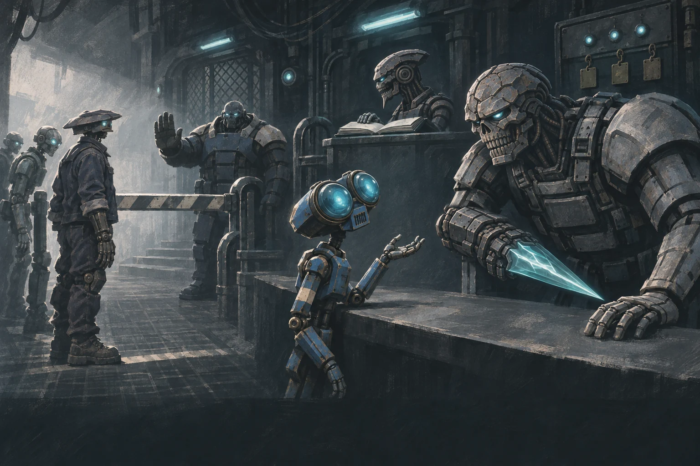

<!doctype html><html lang="en"><meta charset="utf-8"><meta name="viewport" content="width=device-width,initial-scale=1"><title>The held line · E1 clean art frame</title><style>*{box-sizing:border-box}html,body{margin:0;background:#101514;height:100%}main,picture{height:100%;display:grid;place-items:center}img{display:block;width:100vw;height:100svh;object-fit:contain}</style><main aria-label="Device framing proof"><picture><source media="(max-width: 680px) and (orientation: portrait)" srcset="portrait-390.315bdfac4c98.webp 390w, portrait.8408167c7af0.webp 780w" sizes="100vw"></picture></main></html>
